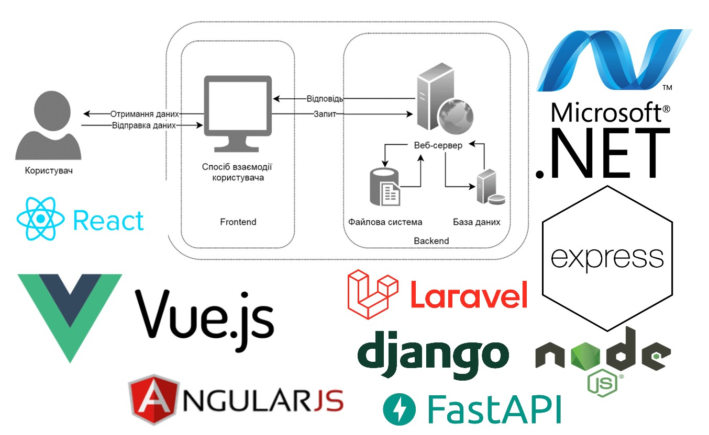
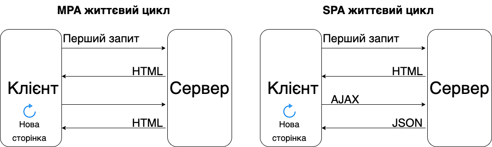
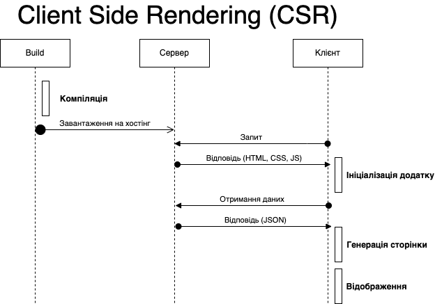
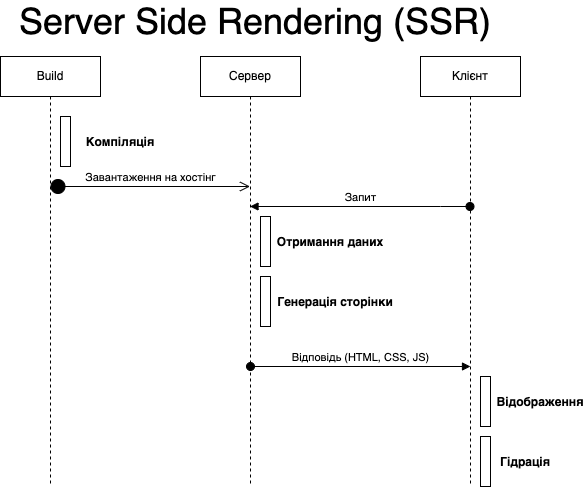
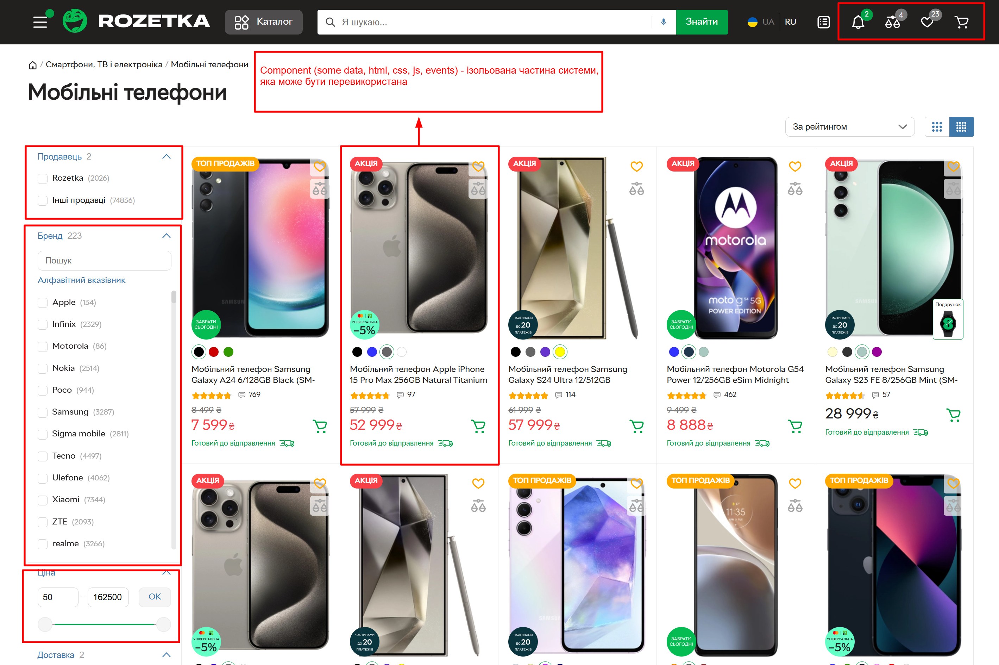

Воркшоп №8. Тренди сучасної веб-розробки. Vue.js.
Тренди сучасної веб-розробки. Vue.js.
Робимо «TO-DO list» веб-застосунок.
План воркшопу:
- Що таке веб-розробка?
- Навіщо нам потрібен Vue.js? Основні концепції.
- Налаштування середовища для розробки.
- Розробка веб-застосунку «TO-DO list».
- Питання та відповіді.
- Рекомендації щодо подальшого вивчення Vue.js.
- Корисні ресурси та матеріали.
Що таке веб-розробка?
Веб-розробка — це процес створення та підтримки веб-сайтів і веб-додатків. Даний процес включає в себе
різні етапи та технології, які дозволяють створювати інтерактивні та динамічні веб-ресурси. Веб-розробка
ділиться на два основні напрямки:
Backend Development
- Серверні мови програмування (C#, Java, Python, Node.js, PHP та інші)
- Бази даних (MySQL, PostgreSQL, SQLite, MongoDB та інші)
- API (Application Programming Interface)
- Etc...
Технології для створення веб-додатків

Способи генерації веб сторінок

Client-Side Rendering (CSR)

Server-Side Rendering (SSR)

Навіщо нам потрібен Vue.js?

Навіщо нам потрібен Vue.js?

Бібліотека або Фреймворк?
Бібліотека – це набори попередньо написаних фрагментів коду, які можна легко інтегрувати до
існуючого коду проекту. Таким чином, бібліотека є спеціалізованим інструментом для конкретних вузьких
потреб, а не універсальним рішенням для розробки всього проекту.
Фреймворк є «шаблоном» для створення веб-додатку. Він забезпечує структуру, де можна розмістити
весь проект. «Шаблони» фреймворку створюють структуру з певними виділеними областями для вбудовування
коду, та знаходиться на більш високому рівні абстракції у порівнянні з бібліотекою.
Навіщо нам потрібен Vue.js?

Навіщо нам потрібен Vue.js?
- Vue.js надає змогу не писати щоразу заново одні й ті самі повторювані речі, а саме відображення даних,
реагування на кліки, реагування ще на щось.
- Vue.js це фреймворк, це означає, що порівняно з іншими бібліотеками він жорстко нав'язує нам конкретну
архітектуру, змушує писати коди в такому стилі, в якому вимагає його сам Vue (менше в програміста свободи,
то менше ризиків для бізнесу).
- Vue.js забезпечує нам розділення на компоненти (це дає змогу програмісту прицільно працювати над конкретним
вузлом системи навіть якщо він не розуміє та не усвідомлює роботу всієї системи).
-
Vue.js реалізує низку концепцій - реактивність і двостороннє зв'язування (відобразити дані на сторінці, коли
користувач щось на сторінці зробив, то оновити дані).
Реактивність - основні концепції Vue.js
Реактивність - це здатність реагувати на зміну даних та сінхронізувати їх відображення.

Двостороннє зв'язування - основні концепції Vue.js
Двостороннє зв'язування (two-way data binding) у Vue.js означає, що зміни в моделі даних автоматично
відображаються в користувацькому інтерфейсі, а зміни в інтерфейсі автоматично оновлюють модель даних. Це
дозволяє зручно синхронізувати стан програми та забезпечує зручність роботи з формами та іншими інтерактивними
елементами.
Example.
У більшості випадків ми працюємо з даними, тому що, завдяки двостороннєму зв'язуванню та
реактивності можемо бути абсолютно впевненими, що дані синхронізовано з відображенням. Аже працювати з
об'єктами,що мають поля, набагато зручніше, ніж з html сторінкою, у якій є різні html-елементи, кожен зі своїми
івентами, властивостями і т.д.
Декларативність - основні концепції Vue.js
Декларативність — одна з ключових концепцій Vue.js, яка означає, що розробник описує, що потрібно зробити,
а не як це зробити. У декларативному підході розробник визначає кінцевий стан інтерфейсу, а фреймворк бере на
себе завдання синхронізації стану даних з DOM.
DOM (Document Object Model) — це програмний інтерфейс для HTML документів. Він представляє документ у
вигляді дерева об'єктів, де кожен об'єкт є частиною документа. DOM дозволяє програмам і скриптам динамічно
надавати доступ до вмісту документа та змінювати його структуру, стиль і вміст тощо. Основні концепції
DOM: Дерево об'єктів, вузли (Nodes), доступ до елементів, маніпуляція елементами, події.
Декларативність - основні концепції Vue.js
- Шаблони (Templates) - дозволяють описувати структуру користувацького інтерфейсу за допомогою HTML.
Вони використовують декларативний синтаксис для прив'язки даних і визначення логіки рендерингу.
Documentation.
- Директиви (Directives) - це спеціальні атрибути, які додають логіку до HTML елементів. Вони
забезпечують декларативний спосіб прив'язки даних і маніпуляції з DOM.
Documentation.
Декларативний рендеринг - Vue розширює стандартний HTML шаблонним синтаксисом, який дозволяє нам
декларативно задавати структуру HTML на основі стану описаного у JavaScript.
Example.
Компоненти - основні концепції Vue.js
Компоненти — це блоки, які дозволяють нам розділити інтерфейс користувача (UI) на незалежні частини, які
можна багаторазово використовувати, і думати про кожну частину окремо. Documentation.

Налаштування середовища для розробки
-
Documentation
-
Швидко спробувати Vue можна безпосередньо в пісочницях:
-
Створення застосунку Vue (Передумови: знайомство з командним рядком, Node.js версії 18.0 або новіша). Як створити Vue одно-сторінковий додаток на вашому локальному комп'ютері? Такі проєкти використовують збірку, яка заснована на Vite, і дозволяє використовувати одно-файлові компоненти Vue (SFC).
Рекомендації щодо подальшого вивчення Vue.js.
Рекомендації щодо подальшого вивчення Vue.js.